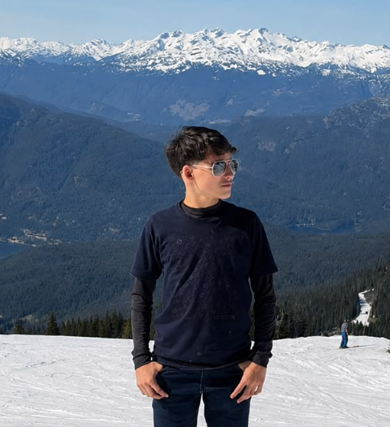
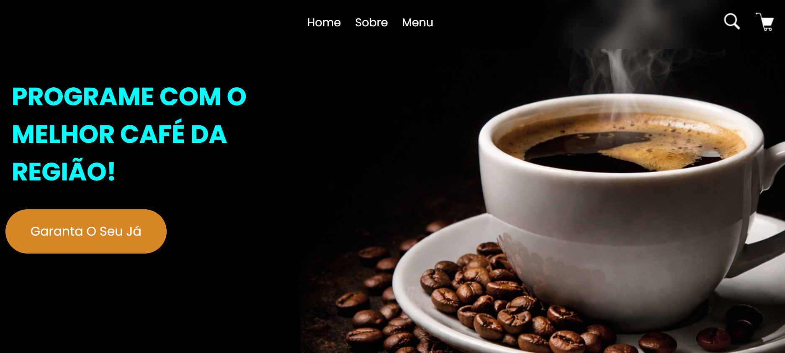
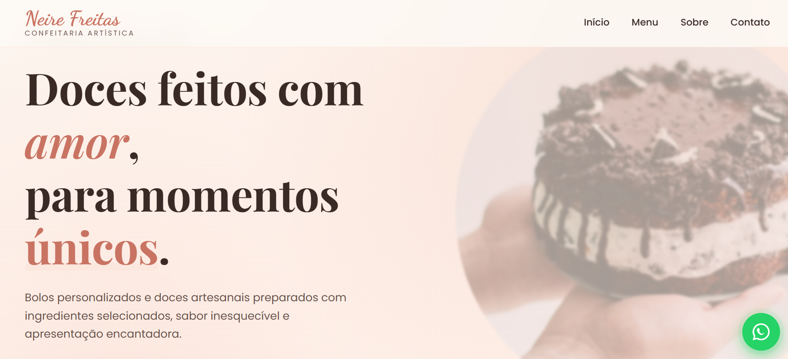
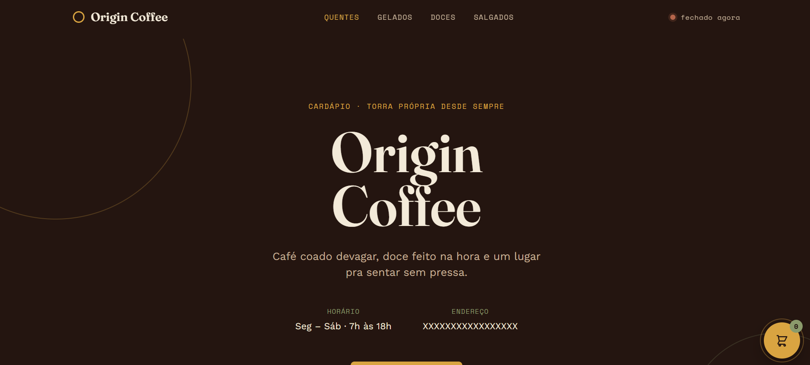

João Augusto
Futuro Desenvolvedor Front End

Futuro Desenvolvedor Front End
A programação sempre despertou meu interesse, principalmente o Front-end. Gosto de aprender na prática, criar novos projetos e buscar formas de melhorar a cada dia. Meu objetivo é continuar evoluindo e me tornar um ótimo desenvolvedor, criando sites bonitos, modernos e que ofereçam uma boa experiência para quem os utiliza.

Projeto desenvolvido como forma de praticar e aprimorar minhas habilidades em HTML, CSS e JavaScript. A página foi criada para simular o site de uma cafeteria, com foco em um design moderno, responsivo e uma navegação intuitiva.
Ver Projeto
Site desenvolvido para apresentar os produtos de uma confeitaria de forma organizada e atrativa. Durante o projeto, utilizei as linguagens HTML, CSS e JavaScript. Trabalhei na criação do layout, na responsividade e em uma experiência visual agradável para destacar os produtos.
Ver Projeto
Projeto desenvolvido para fins de estudo e prática, simulando a landing page de uma cafeteria fictícia. O objetivo foi aplicar conceitos de HTML, CSS e JavaScript, explorando um design mais sofisticado, responsivo e uma identidade visual moderna. Embora a empresa não exista, o projeto demonstra minhas habilidades na criação de interfaces profissionais.
Ver Projeto